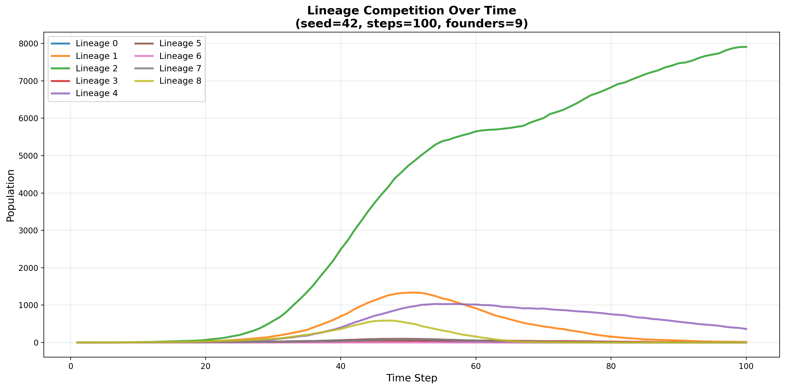
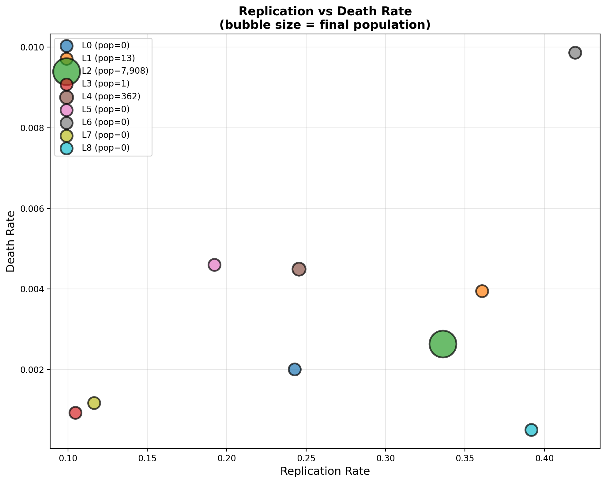
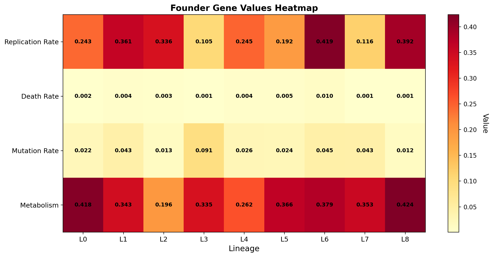
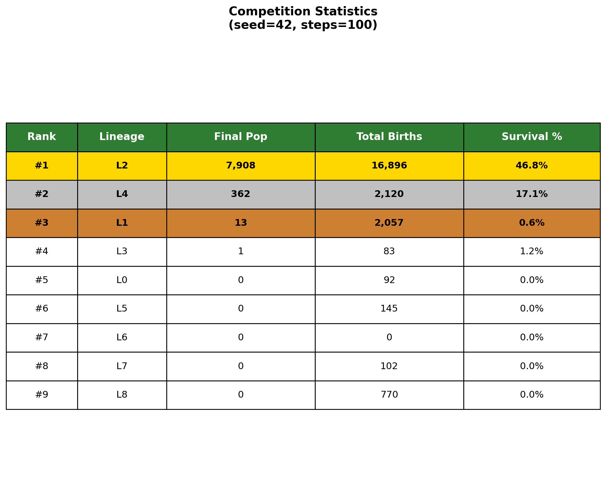
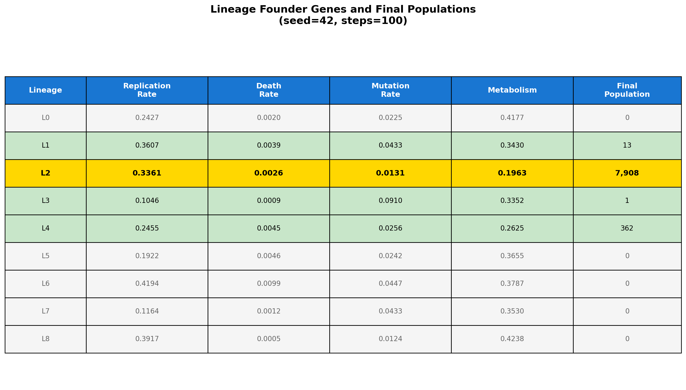

Birth of the First Replicator
Understanding the Origins of Self-Replication
"Agents and Multi-Agent Systems"
Part 1: Theoretical Foundation
Understanding replicators and the origins of life
The Fundamental Question
How do self-replicating entities emerge and evolve?
- What conditions allow replicators to arise from non-living matter?
- What traits determine survival in competitive environments?
- How does natural selection shape replicator populations?
What is a Replicator?
Replicator: An entity capable of creating copies of itself
- Heredity: Offspring resemble their parents
- Variation: Imperfect copying introduces differences
- Selection: Some variants reproduce more successfully
These three properties are sufficient for evolution by natural selection
The Origins Problem
- Prebiotic Earth: No DNA, no cells, no life
- Chemical Building Blocks: Simple molecules in primordial soup
- The Gap: How did the first self-replicating molecule emerge?
- RNA World Hypothesis: RNA as both information carrier and catalyst
The first replicator had to be simple enough to form spontaneously, yet complex enough to replicate and be stable
Part 2: Modeling Approach
Using agent-based simulation to study replicator evolution
Agent-Based Modeling
Simulation as a tool to understand replicator dynamics:
- Digital replicators competing in a shared environment
- Resource constraints creating selection pressure
- Heritable traits that affect survival and reproduction
- Mutation introducing variation
Simulation Parameters
- Environment: 40×40 grid with regenerating resources
- Population: 9 founder lineages with distinct traits
- Traits: Replication rate, death rate, mutation rate, metabolism
- Duration: 100 time steps
- Observation: Which trait combinations lead to dominance?
Heritable Traits in Our Model
Replication Rate: How quickly an entity reproduces
Death Rate: Probability of spontaneous failure
Mutation Rate: Rate of change in offspring traits
Metabolism: Energy cost of existence
Trade-offs: Fast replication requires energy; low mutation maintains successful traits but reduces adaptability
Part 3: Results & Analysis
What we observed in the simulation
Observing Natural Selection
Population dynamics over 100 time steps - natural selection in action
Selection Pressure Results
Lineage 2 dominated the population
Final population: 7,908 (out of ~8,000 total)
By step 50, one lineage achieved near-total dominance
This demonstrates how advantageous trait combinations can sweep through a population
The Winning Trait Combination
- Higher replication rate (25% above average)
- Lower death rate (better survival)
- Lower metabolism (42% more energy efficient)
- Lower mutation rate (preserved successful traits)
Key insight: Energy efficiency was decisive
Replication vs Death Rate
Bubble size = final population. Sweet spot: fast replication + low mortality
Metabolism vs Mutation Rate

Lower metabolism = more energy for reproduction
Trait Comparison Across Lineages
Visual comparison reveals the winning combination
Competition Outcomes
Lineage 2: 7,908 | Lineage 4: 362 | Lineage 1: 13
Full Lineage Analysis
Gold = winner, Green = survivors, Gray = extinct
Part 4: Synthesis & Implications
What this tells us about life's origins
Connecting to Replicator Theory
- Fitness Landscape: Not all trait combinations are equally viable
- Resource Competition: Limited resources create selection pressure
- Optimal Solutions: Evolution finds efficient trait combinations
- Stability: Low mutation preserves successful adaptations
Universal Principles Observed
1. Energy efficiency is critical
Low metabolism beat high replication rate alone
2. Balance matters
Not too fast (wastes energy), not too slow (outcompeted)
3. Stability preserves success
Low mutation maintained the winning combination
Lessons for Understanding Life's Origins
- Efficiency matters early: First replicators needed low metabolic costs
- Selection is powerful: Advantageous traits spread rapidly
- Simple rules, complex outcomes: Evolution emerges from basic principles
- Competition drives innovation: Resource limits force optimization
Relevance to Prebiotic Evolution
Our model demonstrates principles that likely applied to early replicators:
- RNA molecules with lower error rates would preserve successful sequences
- More efficient catalysts would replicate faster with limited resources
- Competition for nucleotides drove selection for efficiency
- Stable replicators could accumulate beneficial modifications
Conclusion
"The fittest replicator balances reproduction with efficiency"
- Energy efficiency was the decisive competitive advantage
- Natural selection rapidly amplifies successful trait combinations
- Simple evolutionary rules can explain complex population dynamics
- Agent-based models illuminate principles of life's origins
Questions?